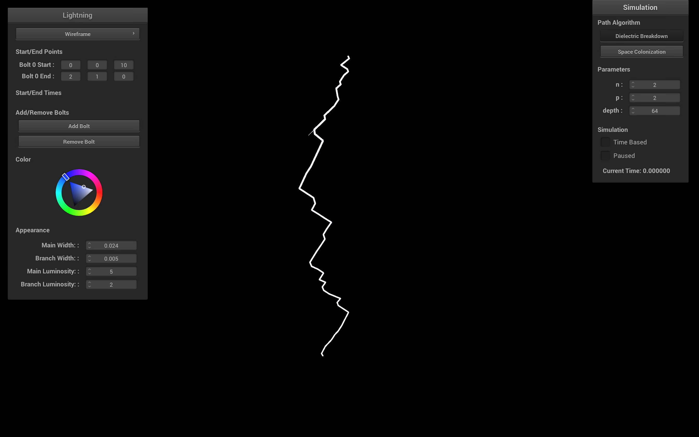

Lightning Simulation
Link to webpage: https://arumilla.github.io/finalprojectwebpage/final/index.html
Link to slides: https://github.com/jding25/lightningsimulation/tree/sc
Link to video: https://github.com/jding25/lightningsimulation/tree/sc

|
|
Abstract
This project focuses on simulating realistic atmospheric lightning in real-time. Our initial goal was to implement a highly realistic physical model using the latest research on lightning, such as the dielectric breakdown model (DBM).We diverged from our initial plans for two main reasons: (1) the DBM necessitates partial differential equation solvers, which are unable to run in real-time, and (2) the DBM is no longer the most up-to-date model for lightning formation. Thus, we changed our focus to come up with two fast approximations to existing physical models: (1) a fast DBM approximation, and (2) a space colonization model. Building off the framework in Homework 4, we added a fully-functional GUI for choosing the algorithm, visualizing the path, and changing the lightning parameters and appearance. Both algorithms can simulate and run in real time. In order to make the path realistic, we implemented a post-processing bloom shader to give the appearance of much stronger light.
Technical Approach
Fast DBM
The fast DBM approach builds off a 2017 paper [link paper here]. We distinguish between three types of cells in a grid space: positive (representing the ground), negative (representing the lightning), and boundary (representing any neighboring cells). In each iteration of the algorithm, we look at the boundary cells as the candidate cells for the next cell in the lightning path. For each boundary cell we calculate and sum its potential in each of the three cell types and then find the potential and probability distribution with the following equations:
\[ V_{approx, \{P, N, B}\} = \sum_{i=1}^{n}(\frac{1}{r_{i}})^{\rho} \]
(“cite” a diagram that the original paper uses to better explain)
This approximates the potential calculation for a boundary cell as the sum of the inverse distance \(r_{i}\) to all cells. The tunable parameter \(\rho\) biases the potential towards nearby cells over distant cells. Observe that there are three different sums, one for the potential between a boundary point and each of the positive, negative, and other boundary cells. The net potential for a single cell is
\[ \phi = \frac{P}{N*B} \]
Using the potentials, we compute the probability of sampling that boundary cell as
\[ P_{i} = \frac{(\phi_{i})^{\eta}}{\sum_{j=1}^{n}(\phi_{j})^{\eta}}, \]
where \(\eta\) biases the probability to high-probability points. In general, a higher \(\rho\) or \(\eta\) decreases the degree of branching.
Variations on Depth
|
|

|

|

|
Variations on η and ρ
|
|

|
|

|
Once we calculate all the potentials for each boundary cell, these potentials become a probability distribution from which we will select the next candidate to join the lightning path. The idea behind the approximation of the potential is to incentivize the selection of cells that are close to ground, hence moving the lighting in a general downwards direction, while also penalizing cells that are close to the lightning path and other boundary cells, which encourages branching. Once the next candidate cell is one that reaches the ground of the grid, the algorithm stops and the path is complete. In the equations, there are two tunable parameters that can be used to affect the lightning path. Increasing \(\rho\) and \(\phi\) generally cause less branches to be taken.
In addition to implementing the fast DBM algorithm proposed by the previous paper, we also made some changes in order to speed up execution. One option that we explored was to prune boundary cells after some parameterized number of boundary cells in the list. This way we could omit potential calculations for boundary cells that are furthest from the current end of the path, which are not very likely to be selected anyway. This did provide some improvement, but this was mostly made irrelevant by the time we implemented our second optimization, being the vectorization of calculations. In the second iteration of this algorithm, we kept the calculations the same, but designed it such that it utilized vectorized functions, such as in numpy. This provided a major improvement in calculation speed, allowing us to calculate the path quickly, and scale for higher resolutions.
The DBM model makes for a compelling and intuitive explanation for the path of lightning. However, the potential difference between a charged region in a cloud and the ground, and the electric field it generates, is far too small to cause lightning formation. The most recent model of lightning formation proposes that the lightning leader travels through the atmosphere in a 3 step process:
- The ionization source causes coronal pulses and an accumulation of metastable oxygen molecules (an O2 molecule in an excited state).
- When metastables reach a critical density, a conducting column in the direction of metastable formation appears. At this critical density, metastables are able to conduct through an equilibrium effect between negatively charged electrons and positively charged ions.
- Electrons move along the column to produce a near-zero electric field, allowing charges to reach the stepped leader from the ionization source. The process then repeats.
Space Colonization
Goals and Deliverables
Our baseline plan is to replicate the implementation and result of Physically Based Animation and Rendering of Lightning by T. Kim and M. Lin which presented a physically based algorithm for the simulation, animation, and rendering of sustained electric arcs.
However, we hope to extend this work as follows:
- modeling physical effects specific to a Monte Carlo raytracer, which previous works do not originally use
- temporal simulation (ignoring or approximating relativistic effects)
- comparisons with more modern models for how lightning behaves, as the phenomenon is still poorly understood
Schedule
Week 1(4/6 - 4/12)
Converge on and implement a physics model for how lightning behaves in any filled medium
Week 2(4/13 - 4/19)
Try to port our physics model in an indoor environment in Blender. Finish milestone video, milestone report webpage, and presentation
Week 3 (4/20 - 4/26)
Create scenes with conductive vs. non-conductive materials, multiple strikes or sink (-) charges, and other interesting effects
Week 4 (4/27 - 5/3)
Adding interactive features, such as spawning source (+) charges, changing initial charge, environments, simulation speed, etc. Finish final project video, final report webpage, and presentation